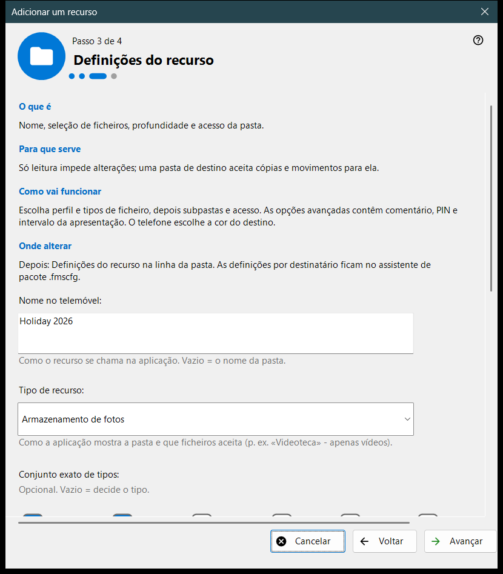
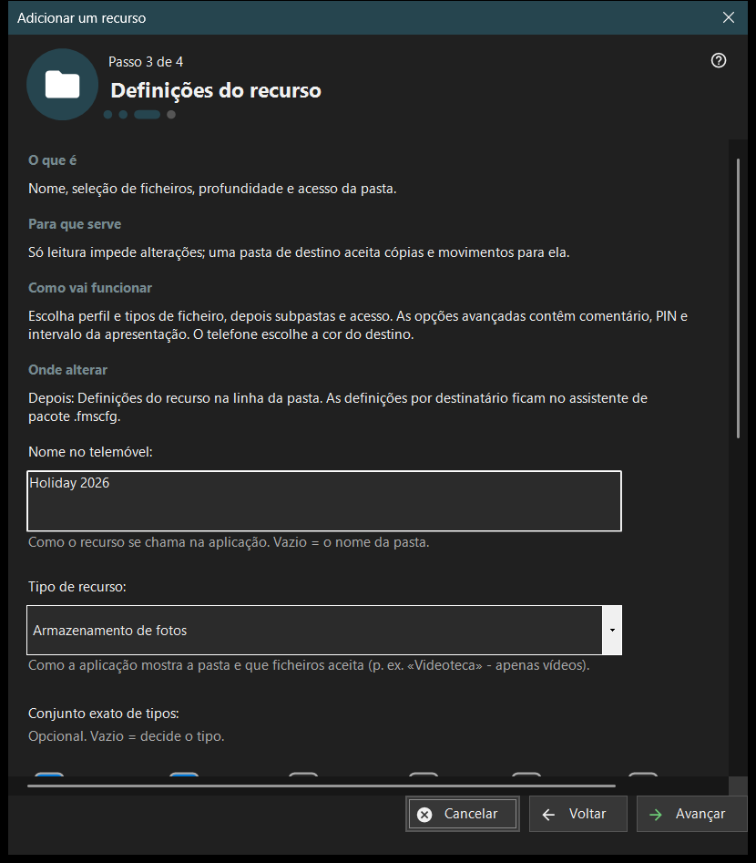

Adicionar um recurso
Finalidade
Um assistente curto que adiciona um recurso compartilhado: uma pasta ou um disco FileDO já aberto. Ele se abre a partir do item «Assistente de adição de recursos..» do menu Adicionar.. e do fluxo da primeira inicialização, e termina adicionando o recurso à lista de compartilhamento.


Nesta ordem
- Leia o que é um recurso e pressione «Avançar».
- Pressione «Escolher uma pasta..» e escolha a pasta.
- Defina o nome, o tipo e o acesso na página «Configurações do recurso».
- Revise o resumo e pressione «Concluir».
- Use os botões da última página para mostrar o código QR ou abrir as configurações.
Os elementos
O que é um recurso
Um recurso é uma pasta ou um disco virtual FileDO aberto a que o visualizador acessa através deste PC. Os arquivos ficam no computador; o celular navega e os copia pela conexão, e uma pasta marcada na lista é a que é servida.
Escolher uma pasta
«Escolher uma pasta..» abre o seletor de pastas habitual e «Discos FileDO..» lista os discos abertos. Uma pasta que já está na lista é recusada com «Essa pasta já está na lista.» Escolha discos FileDO que já estejam abertos; o assistente não os cria nem os monta.
Configurações do recurso
O nome no celular, o tipo, o conjunto exato de multimídia, as condições de análise e o acesso. «Somente leitura» proíbe alterações; uma pasta de destino permite copiar e mover arquivos para ela. «Opções avançadas» contêm o comentário, o PIN e o intervalo da apresentação. A cor do destino é escolhida pelo celular.
Recurso e ações seguintes
«Concluir» salva as configurações e adiciona o recurso; até lá, cancelar não altera nada. A última página indica se o recurso é servido. Se o servidor estiver desligado, o celular ainda não o vê; se o serviço não estiver confirmado, verifique as configurações. «Mostrar o código QR» abre o código de acesso, «Configurações..» as configurações do gerenciador e «Fechar» sai do assistente.
Configurações do gerenciador · Configurações de compartilhamento SFTP · Configurações do servidor de troca